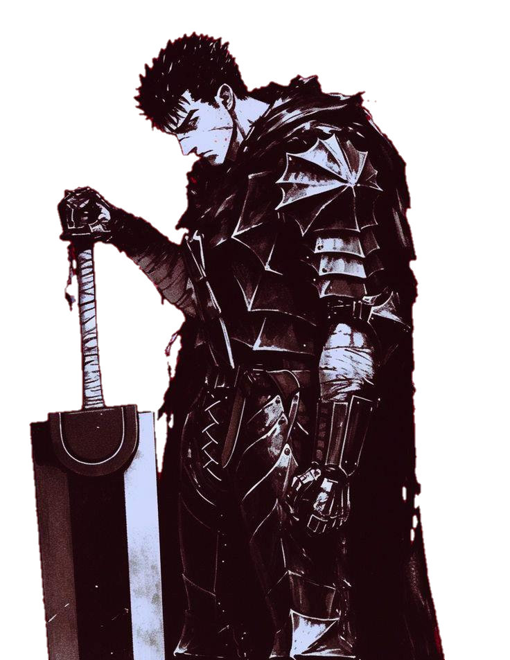
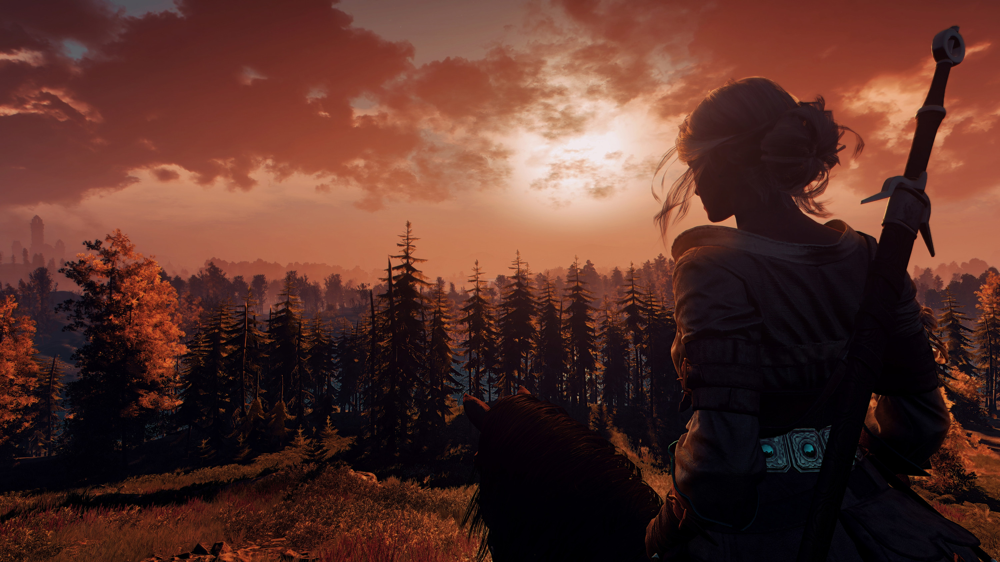

Horário - 00:00
Data - 00/00
Ano - 0000
Fuso Horário - UTC:3
Número de PI - 3,14159265
Tempo de vída do notebook:
000:00:00

DASSRUBRA | Workspace
# MENU
Horário - 00:00
Data - 00/00
Ano - 0000
Fuso Horário - UTC:3
Número de PI - 3,14159265
Tempo de vída do notebook:
000:00:00